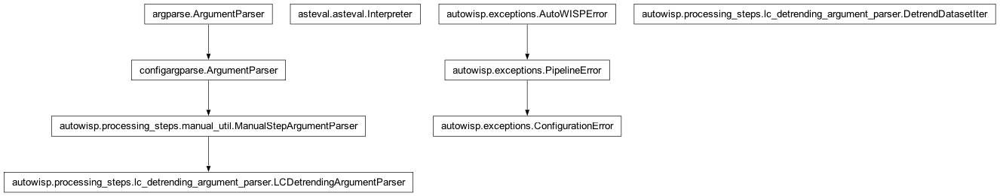
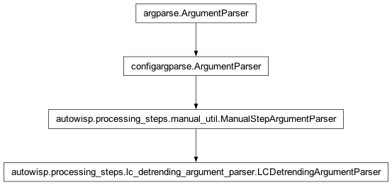

autowisp.processing_steps.lc_detrending_argument_parser module
Class Inheritance Diagram

Implement shared argument parsing for LC detrending processing steps.
- class autowisp.processing_steps.lc_detrending_argument_parser.DetrendDatasetIter(argument)[source]
Bases:
objectIterate over the detrending datasets specified in a cmdline argument.
- class autowisp.processing_steps.lc_detrending_argument_parser.LCDetrendingArgumentParser(mode, description, *, add_reconstructive=True, convert_to_dict=True, input_type='lc')[source]
Bases:
ManualStepArgumentParser
Boiler plate handling of LC detrending command line arguments.
- __init__(mode, description, *, add_reconstructive=True, convert_to_dict=True, input_type='lc')[source]
Initialize the parser with options common to all LC detrending steps.
- Parameters:
ManualStepArgumentParser.__init__(). (See)
- Returns:
None
- static add_transit_parameters(parser, *, timing=True, duration=True, geometry='', limb_darkening=False, fit_flags=False)[source]
Add command line parameters to the current parser to specify a transit.
- Parameters:
timing (bool) – Should arguments specifying the timing of the transit be included, i.e. period, ephemerides, duration?
duration (bool) – Sholud a potentially redundant argument for transit duration be added?
Should arguments specifying the geometry of the transit be included. If the value converts to False, nothing is included. Otherwise this argument should be either:
’circular’: i.e. include radius ratio, inclination, and semimajor axis.
’eccentric’: i.e. in additition to the above, include eccentricity and argument of periastron.
limb_darkening (bool) – Should arguments for specifying the stellar limb-darkening be included?
- Returns:
None
- autowisp.processing_steps.lc_detrending_argument_parser._parse_lc_variables(argument)[source]
Parse the EPD variables command line argument (see help for details).
- autowisp.processing_steps.lc_detrending_argument_parser._parse_substitutions(substitutions_str_iter)[source]
Generator of all possible combination of substitutions.